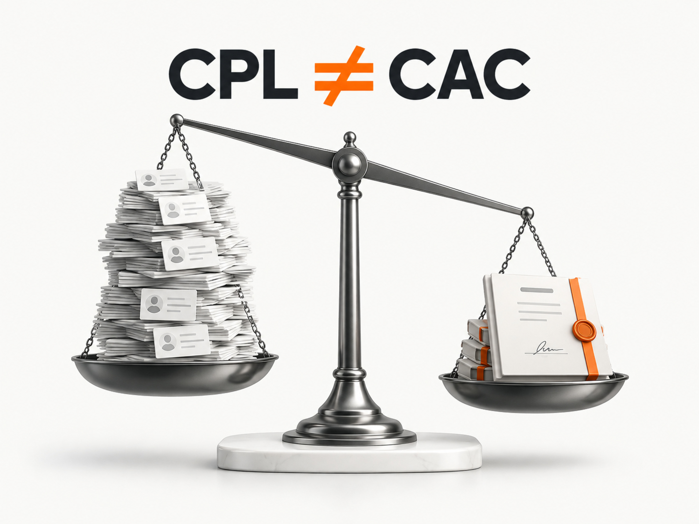

Блог о платном трафике
Продвижение банкротства физических лиц в 2026 году: инструкция и прогноз
Банкротство физических лиц, или БФЛ, остается одной из самых конкурентных ниш в юридическом маркетинге. Здесь много рекламодателей, дорогой горячий спрос, большая доля нецелевых обращений и сильная зависимость результата от отдела продаж.
Дополнительно с 1 января 2026 года изменились требования к рекламе услуг банкротства. Старые агрессивные офферы вроде обещаний гарантированно избавить человека от долгов теперь прямо конфликтуют с законом.
При этом сам рынок остается огромным. За первое полугодие 2026 года суды признали банкротами около 277,5 тыс. граждан и ИП, на 6,8% больше, чем годом ранее. Темп роста снизился, но абсолютный объем процедур по-прежнему очень большой.
В этой статье разберу, как я бы строил продвижение компании по банкротству физических лиц сейчас, какие показатели встречаются в свежих кейсах и какую экономику разумно закладывать до запуска.
Что изменилось в рекламе банкротства в 2026 году
С 1 января 2026 года действует статья 28.1 закона «О рекламе».
Реклама услуг, связанных с банкротством граждан, теперь не должна содержать:
- гарантии или обещания освобождения от денежных обязательств;
- призывы не платить по обязательствам;
- утверждения о том, что государство создало систему освобождения граждан от обязательств;
- утверждения о возможности освобождения гражданина от денежных обязательств.
Также реклама должна содержать обязательное предупреждение о негативных последствиях банкротства, ограничениях на получение кредита, повторном банкротстве и необходимости предварительно обратиться к кредитору и в МФЦ. Для большинства рекламных форматов предупреждению должно отводиться не менее 7% рекламного пространства.
В Яндекс Директе для текстовых объявлений необходимое предупреждение добавляется автоматически. В графических объявлениях ЕПК, видео и медийных креативах его нужно добавлять самостоятельно. Специальные документы для рекламы банкротства Яндекс сейчас не требует.
Это сильно меняет привычный маркетинг БФЛ.
Оффер уже нельзя строить вокруг агрессивного обещания результата. Конкурировать приходится упаковкой услуги, ценой, форматом консультации, специализацией, доверием, удобством работы и качеством воронки.
Причём ограничения вполне реальные. В решениях ФАС 2026 года уже встречаются претензии к рекламе банкротства из-за обещаний освобождения от долгов и недостаточной информации о последствиях процедуры.
Почему БФЛ сложно рекламировать
У этой ниши сразу несколько проблем.
Первая - дорогой сформированный спрос. Человек, который вводит «юрист по банкротству физических лиц Москва», одновременно интересен десяткам компаний.
Вторая - лид еще не означает потенциального клиента. Среди обращений будут люди с неподходящей ситуацией, маленькой суммой долга, другими ожиданиями от услуги и те, кто просто изучает варианты.
Третья - клиент выбирает не мгновенно. Он может оставить заявки сразу в нескольких компаниях.
Четвертая - люди с долговой нагрузкой часто осторожно относятся к звонкам с незнакомых номеров. Поэтому качество и скорость обработки обращения непосредственно влияют на итоговую стоимость договора.
Пятая - дешёвый CPL легко вводит в заблуждение. Кампания может показывать заявки по 800 ₽ и проигрывать другой кампании с CPL 2 000 ₽, если первая практически не дает договоров.
Поэтому в БФЛ я бы вообще не ставил CPL главным бизнес-показателем.
Воронка должна выглядеть так:
реклама -> лид -> квалифицированный лид -> консультация -> договор -> фактическая оплата
Подробнее о том, почему нельзя оценивать рекламу только по количеству заявок, я писал в статье «Нецелевые и некачественные лиды из Яндекс Директа».
Какие результаты показывают свежие кейсы БФЛ
Чтобы получить ориентиры, я посмотрел опубликованные кейсы 2025-2026 годов. Это данные конкретных проектов с разной географией, воронками и критериями лида. Их нельзя превращать в одну «среднюю стоимость лида по рынку».
| Проект | Бюджет | Лиды | Договоры | CPL | Стоимость договора |
|---|---|---|---|---|---|
| Федеральный проект, 12 месяцев | 20,69 млн ₽ | 14 230 | 482 | 1 454 ₽ | 42 925 ₽ |
| Москва, 6 месяцев | 1,66 млн ₽ | 1 474 | 56 | 1 126 ₽ | 29 648 ₽ |
| Кемерово, 3 месяца | 550 854 ₽ | 330 | 27 | 1 669 ₽ | 20 402 ₽ |
| Проект за январь 2026 | 511 078 ₽ с НДС | 492 | 25 | 1 039 ₽ | 20 443 ₽ |
В федеральном проекте конверсия из первичного лида в договор составила около 3,4%.
В московском проекте из 1 474 лидов квалификацию прошли 546, то есть около 37%. В договор превратились 3,8% всех первичных лидов и примерно 10,3% квалифицированных.
В Кемерово квалификацию прошли 120 из 330 обращений, около 36%. Договор заключили 27 человек. Конверсия первичного лида в договор получилась 8,2%, а квалифицированного лида в договор - 22,5%.
Еще один кейс января 2026 года показывает 492 лида, 130 назначенных встреч, 47 проведенных консультаций и 25 договоров при расходах 511 078 ₽ с НДС. Конверсия первичного лида в договор получилась около 5,1%.
Есть и менее приятный пример. В проекте, где до изменения законодательства удавалось получать около 200 целевых обращений по 2 500 ₽, после изменения рекламных материалов стоимость обращения сначала выросла до 3 800-4 500 ₽. Позже проект стабилизировали примерно на 124 обращениях в месяц по 3 411 ₽.
Разброс очень большой. Именно поэтому обещание «дадим лиды на банкротство по 1 000 ₽» практически ничего не говорит об эффективности маркетинга.

На какие цифры я бы ориентировался при прогнозе
Я бы не закладывал опубликованные 1 000-1 500 ₽ за лид как гарантированный результат нового проекта.
Для предварительного расчёта неизвестной кампании разумнее взять более широкий коридор:
первичный лид: 1 500-3 000 ₽;
конверсия первичного лида в договор: 3-5%;
квалификация первичных лидов: ориентировочно 30-40%.
Это не средние показатели рынка. Это диапазон для первоначальной модели, который я бы использовал до получения собственной статистики.
При запуске в Москве, слабом сайте или проблемном отделе продаж фактические цифры могут оказаться хуже. В регионе с хорошим оффером и сильной обработкой - лучше.
Прогноз рекламы БФЛ на 10 договоров в месяц
Посчитаем воронку назад.
Сильный сценарий
CPL - 1 500 ₽.
Конверсия лида в договор - 5%.
Для 10 договоров понадобится:
10 / 5% = 200 лидов.
Рекламный бюджет:
200 × 1 500 = 300 000 ₽.
Стоимость договора из рекламного бюджета:
30 000 ₽.
Рабочий сценарий
CPL - 2 000 ₽.
Конверсия лида в договор - 4%.
Нужно:
10 / 4% = 250 лидов.
Бюджет:
250 × 2 000 = 500 000 ₽.
Стоимость договора:
50 000 ₽.
Осторожный сценарий
CPL - 3 000 ₽.
Конверсия лида в договор - 3%.
Нужно примерно 334 лида.
Бюджет:
334 × 3 000 = около 1 млн ₽.
Стоимость договора:
около 100 000 ₽.
Разница огромная, хотя во всех трёх сценариях рекламируется одна и та же услуга.
Поэтому вопрос «сколько стоит лид на банкротство?» вторичен.
Намного полезнее сначала определить, сколько бизнес может позволить себе платить за договор.
Как посчитать допустимую стоимость лида
Предположим, компания готова платить за новый договор максимум 50 000 ₽.
Если в договор превращаются 4% лидов:
Допустимый CPL = 50 000 × 4% = 2 000 ₽.
Если отдел продаж повысит конверсию до 6%:
50 000 × 6% = 3 000 ₽.
Получается интересная ситуация: компания с сильным отделом продаж может покупать более дорогой трафик и при этом зарабатывать больше конкурента, который хвастается дешёвыми заявками.
И наоборот, плохая обработка способна сделать нерентабельными даже очень дешёвые лиды.
Поэтому для БФЛ реклама и продажи практически неразделимы.
Подробнее о расчёте этого показателя есть в статье «Конверсия лида в продажу: какая считается нормальной».
Сколько денег нужно на старт
Запуск БФЛ с бюджетом 30-50 тыс. ₽ в месяц я бы не рассматривал как нормальный тест для большинства регионов.
При CPL 2 000 ₽ бюджет 50 000 ₽ даст всего около 25 первичных обращений.
При конверсии в договор 4% математическое ожидание - примерно один договор. Любая случайность полностью меняет результат месяца.
На таких объемах невозможно нормально сравнивать гипотезы, обучать алгоритмы и отделять закономерность от случайности.
Для локального проекта я бы сначала считал бюджет от необходимого количества договоров и допустимого CAC, а уже потом решал, позволяет ли экономика вообще заходить в Директ.
Для федерального проекта масштабы совсем другие. В опубликованном федеральном кейсе за год было потрачено более 20 млн ₽ только рекламного бюджета.
Как я бы запускал Яндекс Директ на банкротство физических лиц
1. Сначала определить продукт
Не стоит рекламировать абстрактное «решение проблем с долгами».
Нужно точно понимать, что продается:
- судебное банкротство;
- сопровождение внесудебного банкротства;
- реструктуризация;
- консультация;
- конкретная юридическая услуга для определенного типа должников.
Разные продукты требуют разных запросов, посадочных страниц и критериев квалификации.
2. Начать с Поиска
Для новой кампании Поиск я бы использовал как основной источник первых данных.
Здесь можно собрать людей, которые сами ищут:
- банкротство физических лиц;
- юриста по банкротству;
- стоимость процедуры;
- банкротство в конкретном городе;
- помощь при конкретной долговой ситуации.
У такого трафика высокий коммерческий интент.
Свежие кейсы тоже показывают, что Поиск остается одним из основных каналов БФЛ, особенно когда нужен именно сформированный спрос.
При этом я бы не пытался любой ценой выкупать максимум трафика по самым очевидным запросам.
В московском кейсе автор отдельно отмечает стоимость горячего клика порядка 500-700 ₽ и использует смежные направления спроса, чтобы не конкурировать только за самый дорогой запрос. Это данные одного проекта, а не универсальная цена московского клика, но сам принцип здравый.
3. Работать со смежным сформированным спросом
Не все потенциальные клиенты уже ищут слово «банкротство».
Человек может искать решение самой проблемы:
- высокие платежи по кредитам;
- реструктуризацию;
- юридическую помощь должникам;
- консультацию по задолженности;
- варианты действий при невозможности платить.
Но здесь есть важное условие.
Рекламировать нужно реально оказываемую услугу. Нельзя использовать одну услугу исключительно как приманку, чтобы затем любой ценой продавать другую.
И отдельно нужно проверять рекламные формулировки на соответствие статье 28.1 закона «О рекламе».
4. Не дробить кампании без необходимости
В БФЛ данных нужно много.
Если сделать десятки маленьких кампаний, разделить каждый запрос, город и оффер отдельно, статистика размажется между ними.
Я бы отделял только действительно разные задачи:
- прямой поисковый спрос;
- отдельные продукты или существенно отличающиеся офферы;
- РСЯ;
- ретаргетинг.
Географию тоже есть смысл разделять, когда у регионов уже заметно отличается экономика.
Подробнее про общие принципы запуска юридической тематики есть в статье «Яндекс Директ для юридических услуг».
Нужна ли РСЯ
Да, но я бы не начинал масштабирование только с неё.
РСЯ позволяет работать с более широкой аудиторией и возвращать пользователей, которые уже интересовались услугой.
В свежих кейсах РСЯ дает результат, но одновременно авторы регулярно упоминают проблемы с качеством площадок, ботами и нецелевыми обращениями.
Поэтому здесь особенно важно смотреть не только стоимость формы.
Я бы сравнивал:
CPL -> стоимость квалифицированного лида -> стоимость консультации -> стоимость договора.
Если РСЯ дает лид за 1 200 ₽, а Поиск за 2 500 ₽, это еще не значит, что РСЯ эффективнее.
Про проверку подобных ситуаций есть отдельные материалы о некачественных площадках РСЯ и о скликивании в Яндекс Директе.
Какой сайт нужен для рекламы банкротства
В такой конкурентной нише вести дорогой поисковый трафик на слабый универсальный корпоративный сайт опасно.
Человек должен сразу понять:
- чем занимается компания;
- работает ли она с его ситуацией;
- в каком регионе оказывает услуги;
- кто будет вести дело;
- как проходит работа;
- сколько примерно стоит услуга;
- есть ли рассрочка;
- какой опыт есть у компании;
- как записаться на консультацию.
На сайте нужны реальные юристы, понятные условия, кейсы, отзывы и доказательства работы.
Отдельный важный элемент - квалификация.
Вместо формы из имени и телефона имеет смысл аккуратно получить данные, необходимые бизнесу для первоначальной оценки обращения. Например, регион, примерный размер задолженности и несколько ключевых параметров ситуации.
В двух свежих кейсах с опубликованной квалификацией только около 36-37% первичных лидов дошли до статуса квалифицированных.
То есть примерно две трети обычных заявок могут не пройти дальнейший фильтр даже у работающей рекламной системы.
Бесплатная консультация и квиз
Квиз для БФЛ имеет смысл не потому, что «квизы повышают конверсию», а потому, что позволяет одновременно решить две задачи:
- дать человеку простой первый шаг;
- предварительно квалифицировать обращение.
Яндекс в собственном материале о продвижении банкротства также относит лид-формы и квизы к основным инструментам привлечения клиентов и отмечает, что подробная анкета позволяет лучше оценивать качество заявки.
Но превращать квиз в двадцать вопросов тоже не нужно.
Человек с долгами не пришел заполнять юридическую анкету. Чем выше барьер, тем меньше людей закончат форму.
Какую цель ставить автостратегии
Оптимизировать БФЛ только по отправке формы я бы не хотел.
Допустим, кампания А приводит 100 заявок по 1 000 ₽, но только 20 подходят компании.
Кампания Б приводит 60 заявок по 1 600 ₽, зато 35 из них квалифицированные.
По CPL выигрывает первая.
По реальному бизнес-результату вполне может выиграть вторая.
Поэтому из CRM нужно возвращать обратно:
лид -> квалифицированный лид -> консультация -> договор.
Для этого используются офлайн-конверсии. Яндекс Метрика и Директ могут получать статусы, которые произошли уже после заявки на сайте.
Подробная инструкция есть в статье «Офлайн-конверсии в Яндекс Директ и Метрике».
Если договоров пока мало, оптимизироваться непосредственно на договор может быть слишком рано. Тогда я бы выбрал более частую глубокую цель, например квалифицированный лид или состоявшуюся консультацию.
Алгоритму нужен достаточный объем событий. Для конверсионных стратегий я обычно ориентируюсь примерно на 15-20 целевых действий в неделю на кампанию. Подробнее это разобрано в статье «Какую стратегию выбрать в Яндекс Директ».
Отдел продаж в БФЛ влияет на рекламу сильнее обычного
В этой нише потенциальный клиент легко оставляет несколько заявок подряд.
Если одна компания звонит через пять минут, а другая через два часа, сравнивать их рекламные показатели бессмысленно.
В свежих кейсах специалисты отдельно отмечают необходимость быстрой обработки и работу с CRM. В одном из них в качестве практического ориентира используется контакт в течение 15 минут после заявки.
Я бы обязательно контролировал:
- время первого контакта;
- процент дозвона;
- количество попыток связаться;
- причину брака;
- назначенные консультации;
- состоявшиеся консультации;
- договоры;
- оплаты.
Без этого маркетолог видит только половину картины.
SEO для банкротства физических лиц
В БФЛ я бы запускал SEO параллельно с рекламой, а не вместо неё.
Яндекс Директ дает быстрый спрос, SEO постепенно снижает зависимость от рекламного аукциона.
Основой семантики могут быть не только общие запросы вроде «банкротство физических лиц», но и конкретные вопросы пользователя:
- стоимость банкротства;
- последствия процедуры;
- банкротство через МФЦ;
- банкротство с ипотекой;
- банкротство при наличии имущества;
- что будет с автомобилем;
- сколько длится процедура;
- какие долги не списываются;
- судебное и внесудебное банкротство;
- региональные запросы по городам присутствия компании.
Это хороший пример тематики, где информационный контент находится рядом с коммерческим спросом.
Человек может сначала изучать последствия банкротства, а через несколько недель выбирать юриста.
Но здесь особенно опасен поток однотипных SEO-страниц, созданных только заменой названия города. Нужна реальная локальная ценность: офис, специалисты, условия работы, кейсы региона, контакты и информация, которая действительно отличается.
Яндекс Карты
Если компания принимает клиентов в офисе, карточка в Яндекс Картах тоже имеет смысл.
Для локального поиска человеку важны:
- рейтинг;
- количество и содержание отзывов;
- фотографии офиса;
- специалисты;
- адрес;
- режим работы;
- возможность быстро связаться.
В официальной статье Яндекса о продвижении БФЛ отдельно упоминается продвижение через сервисы Яндекса и возможность показывать информацию о специалистах, отзывах и услугах.
Для компании с несколькими реальными офисами локальное присутствие можно развивать отдельно по каждому городу.
Главная ошибка - покупать дешёвые лиды вместо клиентов
В нише БФЛ рынок лидогенерации огромный.
Можно найти предложения заявок за несколько сотен рублей. Но сравнивать такие лиды с собственной поисковой рекламой только по цене некорректно.
Нужно знать:
- откуда получен лид;
- эксклюзивный он или продается нескольким компаниям;
- как определяется целевой лид;
- есть ли дубли;
- какой процент дозвона;
- какой процент проходит квалификацию;
- сколько назначается консультаций;
- сколько заключается договоров.
Лид по 500 ₽ с конверсией в договор 1% дает CAC 50 000 ₽.
Лид по 2 000 ₽ с конверсией 8% дает CAC 25 000 ₽.
Второй в четыре раза дороже на входе и в два раза выгоднее на выходе.

Какие показатели смотреть каждую неделю
Для рекламы банкротства я бы собрал один отчет:
| Этап | Что считать |
|---|---|
| Реклама | расходы, показы, клики, CPC |
| Сайт | визиты, конверсия, лиды, CPL |
| Квалификация | квалифицированные лиды, их доля и стоимость |
| Продажи | консультации, договоры, конверсия |
| Экономика | CAC, сумма договоров, оплаты |
Отчет только с кликами и CPL для этой ниши практически бесполезен.
Особенно когда рекламная кампания начинает масштабироваться.
Что чаще всего ломает рекламу БФЛ
Погоня за минимальным CPL. Алгоритм получает сигнал искать людей, которые легко заполняют форму, а не людей, которые заключают договор.
Слабая квалификация. Все заявки выглядят одинаково, хотя их ценность для бизнеса радикально различается.
Отсутствие CRM и офлайн-конверсий. Директ не получает обратной связи о качестве.
Один оффер для всей аудитории. Человек, уже ищущий юриста по банкротству, и человек, который только пытается уменьшить кредитный платеж, находятся на разных этапах.
Нарушение новых требований к рекламе. Старые формулировки 2025 года нельзя автоматически переносить в кампании 2026 года.
Слишком маленький тестовый бюджет. На нескольких десятках лидов сложно отличить рабочую закономерность от случайности.
Чрезмерное дробление кампаний. Каждая кампания получает слишком мало данных для нормальной оптимизации.
Оценка рекламы без отдела продаж. Можно бесконечно менять ключи и объявления, хотя основная потеря денег происходит после заявки.
Пошаговая схема продвижения БФЛ
Я бы запускал проект в таком порядке:
- Определить продукты и критерии квалифицированного клиента.
- Посчитать максимально допустимую стоимость договора.
- Подключить CRM, Метрику, коллтрекинг и передачу офлайн-конверсий.
- Проверить рекламные материалы на требования законодательства 2026 года.
- Подготовить отдельную посадочную под БФЛ с квалификацией.
- Запустить сформированный спрос на Поиске.
- Отдельно протестировать подходящие смежные направления.
- После накопления данных подключать РСЯ и ретаргетинг.
- Оптимизироваться не по CPL, а по квалификации, консультациям и договорам.
- Параллельно развивать SEO и локальное присутствие.
- Еженедельно разбирать поисковые запросы, качество лидов и причины потерь в продажах.
- Масштабировать только те связки, которые подтверждают экономику по договорам.
Какой результат считать хорошим
Для БФЛ невозможно назвать универсальный хороший CPL.
По свежим опубликованным кейсам стоимость первичного обращения отличается в несколько раз, а стоимость договора зависит еще сильнее от региона, оффера, продукта, сайта и отдела продаж.
Я бы ориентировался на другое:
реклама хорошая, если компания получает необходимое количество договоров по стоимости, которая укладывается в её реальную юнит-экономику.
Для первоначального прогноза нового проекта я бы заложил CPL 1 500-3 000 ₽ и конверсию первичного лида в договор 3-5%, а затем как можно быстрее заменил эти предположения собственной статистикой.
При рабочем сценарии с CPL около 2 000 ₽ и конверсией в договор 4% один договор обходится примерно в 50 000 ₽ рекламного бюджета.
Дальше всё решает экономика конкретной юридической компании: стоимость услуги, себестоимость ведения дела, рассрочка, платежная дисциплина клиента и допустимая стоимость привлечения.
Именно с этих цифр я бы начинал продвижение банкротства физических лиц, а не с вопроса «как получить лид подешевле».